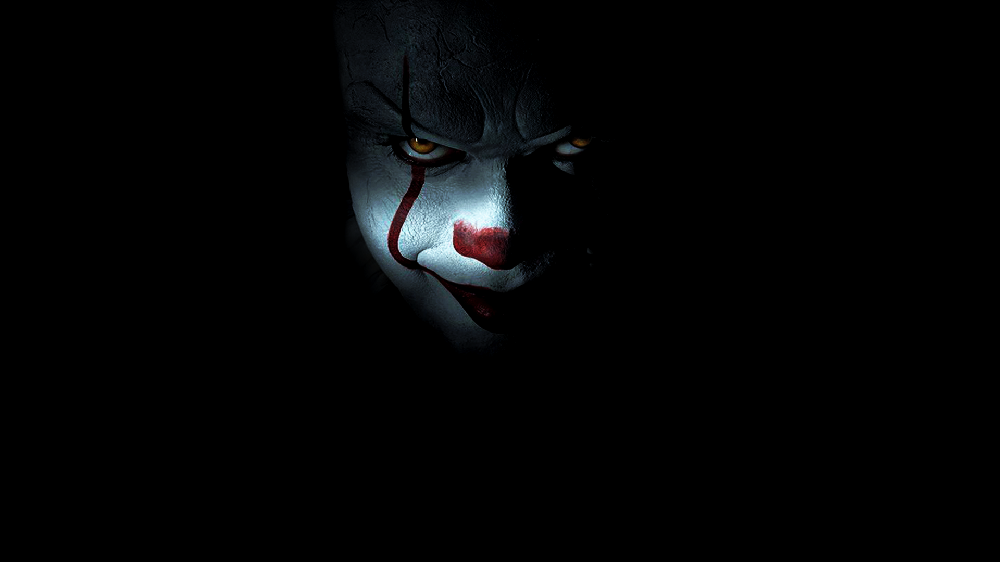

IT CHAPTER 1
CEO foundation
Peter Sciretta of Slashfilm is calling this second film "probably scarier than chapter one -- more Pennywise imagery to haunt your dreams .
www.IT.com
HENRRY
Art director
but he also found it less than and it is enough the first, and overlong. #ITChapterTwo is probably scarier than chapter one - more Pennywise imagery to haunt your dreams .
@www.IT.com

PENNYWISE
Designer
There could even be a new novel set in the IT universe, although Stephen King has stated that he has no intentions of bringing Pennywise back .
@www.IT.com